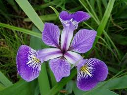

Iridaceae
Iris Family
The Iridaceae, commonly known as the iris family, is a large and diverse family of perennial herbaceous plants, characterized by their often showy flowers, underground storage organs (rhizomes, corms, or bulbs), and equitant (overlapping and flattened) leaves. This family includes well-known ornamentals like irises, crocuses, gladioli, and freesias, as well as saffron, a valuable spice derived from Crocus sativus.
Overview
The Iridaceae family comprises about 66 genera and over 2,200 species, distributed worldwide but with major centers of diversity in southern Africa and temperate South America. Members are typically perennial herbs growing from rhizomes, corms, or bulbs, which allow them to survive unfavorable conditions like drought or cold.
Iridaceae are renowned for their striking flowers, which often exhibit complex structures and vibrant colors, attracting a variety of pollinators including bees, birds, and flies. The floral structure is typically based on a pattern of three, with three sepals (often petal-like), three petals, three stamens, and an inferior ovary composed of three fused carpels.
Economically, the family is most important for horticulture, providing numerous popular garden plants and cut flowers. Saffron, derived from the stigmas of Crocus sativus, is one of the world's most expensive spices. Some species also have traditional medicinal uses.
Quick Facts
- Scientific Name: Iridaceae
- Common Name: Iris family
- Number of Genera: Approximately 66
- Number of Species: Over 2,200
- Distribution: Worldwide, especially diverse in southern Africa and temperate South America
- Evolutionary Group: Monocots - Asparagales
Key Characteristics
Growth Form and Habit
Most Iridaceae are perennial herbs that die back to underground storage organs (rhizomes, corms, or bulbs) during unfavorable seasons. A few species are evergreen, and some are shrub-like or even small trees (e.g., Aristea). Stems are typically erect and unbranched or sparingly branched.
Leaves
Leaves are characteristically equitant, meaning they are arranged in two ranks (distichous), folded lengthwise, and overlapping at the base, often forming a fan-like structure. They are typically simple, entire, linear or sword-shaped, with parallel venation. Stipules are absent.
Inflorescence
Flowers are borne singly or in various types of inflorescences, often spikes, racemes, or panicles. A common type is the rhipidium, a fan-shaped, determinate cluster enclosed by spathe-like bracts. Flowers are often subtended by two bracts (spathes).
Flowers
Iridaceae flowers are generally bisexual, actinomorphic (radially symmetrical) or zygomorphic (bilaterally symmetrical), and often large and showy. Key floral features include:
- Perianth: Composed of six tepals (undifferentiated petals and sepals) arranged in two whorls of three. The tepals are often fused at the base into a tube. In Iris, the outer whorl (sepals) are called "falls" and the inner whorl (petals) are called "standards".
- Androecium: Typically consists of three stamens, positioned opposite the outer tepals (sepals). Filaments may be free or fused.
- Gynoecium: An inferior ovary composed of three fused carpels, usually with three locules containing numerous ovules on axile placentation. The style is often branched, sometimes elaborately petaloid (as in Iris).
Fruits and Seeds
The fruit is typically a loculicidal capsule, splitting open along the partitions between the locules to release numerous seeds. Seeds are variable in shape and may sometimes have wings or arils for dispersal.
Chemical Characteristics
Iridaceae plants contain various chemical compounds, including terpenoids, flavonoids (often responsible for flower color), and sometimes alkaloids or phenolic compounds. Some species contain toxic glycosides.
Field Identification
Identifying members of the Iridaceae family often relies on recognizing their distinct vegetative and floral features:
Primary Identification Features
- Equitant leaves: Look for leaves that are flattened, folded, and overlap at the base in a fan-like arrangement.
- Flowers with parts in threes: Six tepals (3 outer, 3 inner), three stamens, and a three-parted inferior ovary are characteristic.
- Underground storage organs: Presence of rhizomes, corms, or bulbs (though often hidden underground).
- Inferior ovary: The ovary is located below the attachment point of the tepals and stamens.
Secondary Identification Features
- Spathe bracts: Flowers or inflorescences are often enclosed or subtended by one or two prominent bracts (spathes).
- Branched or petaloid styles: In some genera like Iris, the style branches are large and petal-like.
- Flower symmetry: Note whether the flower is radially symmetrical (actinomorphic, e.g., Crocus) or bilaterally symmetrical (zygomorphic, e.g., Gladiolus).
Seasonal Identification Tips
- Spring: Many species, like Crocus and early Iris, flower in spring, often emerging before or with the leaves.
- Summer: Peak flowering time for genera like Gladiolus, Iris (later species), and Sisyrinchium. Look for the characteristic fan of leaves.
- Fall: Some species, like autumn crocuses (not true Crocus, but often confused) and certain Iris species, bloom in the fall.
- Winter: Most species die back, but the persistent capsules or basal leaf fans of evergreen species might be visible.
Common Confusion Points
- Liliaceae (Lily family): Lilies have superior ovaries and typically six stamens (vs. inferior ovary and three stamens in Iridaceae). Their leaves are usually not equitant.
- Orchidaceae (Orchid family): Orchids often have highly modified, zygomorphic flowers with inferior ovaries, but typically only have one or two stamens fused with the style into a column. Their leaves are rarely equitant.
- Amaryllidaceae (Amaryllis family): Share inferior ovaries and bulbous habits with some Iridaceae, but typically have six stamens and often form umbel-like inflorescences.
Field Guide Quick Reference
Look For:
- Equitant (overlapping, flattened) leaves
- Flowers with 6 tepals, 3 stamens
- Inferior ovary
- Rhizomes, corms, or bulbs
- Spathe bracts subtending flowers
Key Variations:
- Actinomorphic vs. Zygomorphic flowers
- Tepals free or fused into a tube
- Style simple or branched/petaloid
- Presence of rhizomes, corms, or bulbs
- Inflorescence type (single flower, spike, rhipidium)
Notable Examples
The Iridaceae family includes many well-known and beloved ornamental plants:

Iris pseudacorus
Yellow Flag Iris
A widespread species native to Europe, western Asia, and northwest Africa, often found in wetlands. It's a robust perennial growing from a thick rhizome, with classic iris flowers featuring yellow falls and smaller standards. It can be invasive in some regions.

Crocus sativus
Saffron Crocus
Cultivated for its long, red stigmas, which are harvested and dried to produce saffron spice. This autumn-flowering species grows from a corm and has lilac-purple flowers. It is unknown in the wild and likely originated from mutations of a wild ancestor.

Gladiolus x hortulanus
Garden Gladiolus
These popular garden flowers are complex hybrids derived mainly from South African species. They grow from corms and produce tall spikes of large, often brightly colored, zygomorphic flowers. They are widely grown for cut flowers and garden display.

Freesia x hybrida
Freesia
Native to southern Africa, freesias are prized for their fragrant, zygomorphic flowers borne on one side of a bent spike (a type of rhipidium). They grow from corms and come in a wide range of colors. Popular as cut flowers and garden plants.

Sisyrinchium angustifolium
Narrowleaf Blue-eyed Grass
Despite its common name, this is not a grass but a member of the iris family native to eastern North America. It's a small perennial with grass-like equitant leaves and delicate, star-shaped blue flowers with yellow centers. Grows from fibrous roots, sometimes with short rhizomes.

Dietes grandiflora
Large Wild Iris / Fairy Iris
A rhizomatous perennial native to southern Africa, often grown in warm climates for its attractive, iris-like white flowers marked with yellow and violet. Unlike many irises, its flowers last more than one day. It has stiff, sword-like equitant leaves.
Phylogeny and Classification
Iridaceae belongs to the order Asparagales, a large and diverse order within the monocots. This order also includes families like Orchidaceae (orchids), Amaryllidaceae (amaryllis, onions), and Asparagaceae (asparagus, agave, hyacinths). Iridaceae is considered a relatively early-diverging lineage within the "higher" Asparagales.
Molecular studies have led to a better understanding of relationships within the family, which is often divided into several subfamilies, including Isophysidoideae (sister to all others), Nivenioideae, Iridoideae, and Crocoideae. Key evolutionary traits include the development of corms and bulbs from rhizomes, the evolution of zygomorphic flowers from actinomorphic ancestors, and the diversification of pollination syndromes.
Position in Plant Phylogeny
- Kingdom: Plantae
- Clade: Angiosperms (Flowering plants)
- Clade: Monocots
- Order: Asparagales
- Family: Iridaceae
Evolutionary Significance
The Iridaceae family showcases significant evolutionary trends within monocots:
- Diversity of storage organs: Evolution from rhizomes to bulbs and corms has allowed adaptation to seasonally dry or cold climates.
- Floral diversity: Represents transitions from radial to bilateral symmetry, adaptations to various pollinators (bees, birds, flies, moths), and complex structures like petaloid styles.
- Equitant leaves: A distinctive leaf arrangement common in the family.
- Biogeography: Shows major centers of diversity, particularly in southern Africa, indicating significant regional radiations.